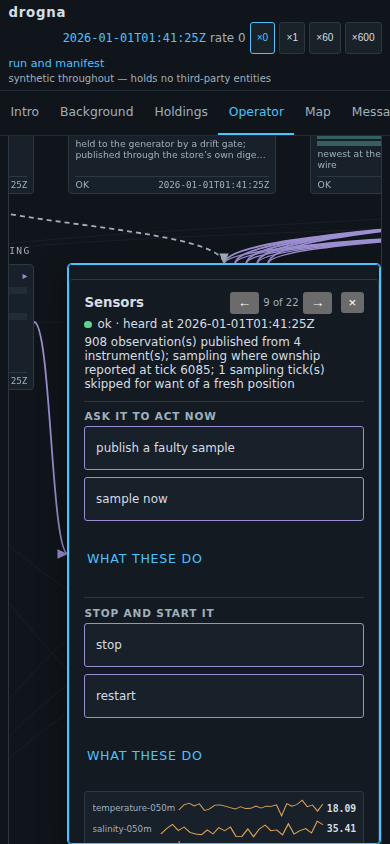

Ten nodes with nothing to press

The background
A control plane drawn as a diagram has to put the controls somewhere. The obvious answer is inside the part they act on, under what that part says about itself. It reads well on a laptop.
On a phone it makes the button the last thing in a card several screens long, at a browser's default height: a cursor's target, a thumb's coin toss.
The requirement
What a reader can do to a component should be the first thing they meet on opening it, at a size a thumb can hit. And every part should offer something: opening one and finding nothing teaches a reader the diagram is a picture rather than a plane.
Ten of the twenty-two offered nothing — protected from being stopped, and no control declared.
The options considered
A button on each of the ten survives as far as the first one you try to write. The stores are written through one interface and read by somebody else; the broker and the gate act on no schedule anyone could bring forward. A button making one produce a message would be the display inventing traffic — the failure the tab exists against.
So three answers. Five got a real prompt. Six requests went to the components that serve, two existing to be refused. Three stores got a sentence saying they answer nothing, and a button opening the node that does.
The demo
Try the refusals. Open boundary and ask for a path the gate will not serve; open
broker and publish on the clock topic, which the shell reads and may never write. Both
refuse and name the rule; the first turns up on Messages as a denial.
Then open sensors and press sample now.